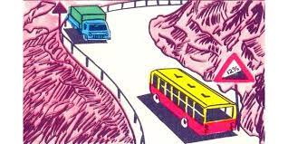
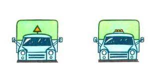
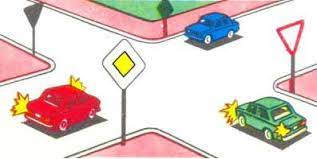
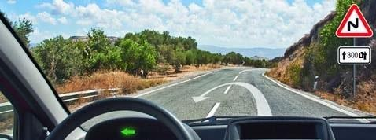
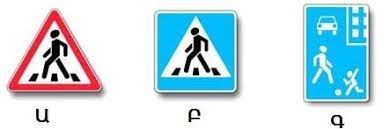
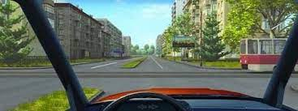
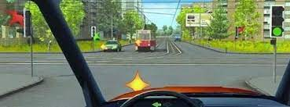
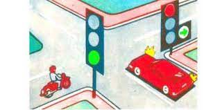
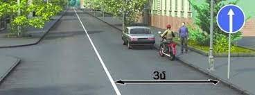
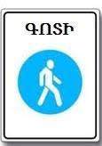

Թեստ 34
30:00
1. «Ճանապարհային երթևեկության անվտանգության ապահովման մասին» ՀՀ օրենքի համաձայն` վթարային իրադրություն է համարվում`
2. Ճանապարհի մաս հանդիսանում են արդյո՞ք մայթը կամ կողնակները
3. Տրանսպորտային միջոցների շահագործումն արգելվում է, եթե`
4. Կողային կցորդով մոտոցիկլների շահագործումն արգելվում է, եթե`
5. Ո՞ր տրանսպորտային միջոցի վարորդը պետք է զիջի ճանապարհը:

6. Տեղադրվածներից ո՞րն է կիրառվում որպես ավտոգնացքի ճանաչման նշան:

7. Խաչմերուկը երկրորդը կանցնի`

8. Հետադարձն այս վայրում

9. Ո՞ր նշաններով է նշվում այն հատվածը, որտեղ վարորդները պետք է զիջեն երթևեկելի մասը հատող հետիոտներին

10. Տրամվային զիջել

11. Մտադիր եք կատարել ձախ շրջադարձ: Ո՞ւմ եք պարտավոր զիջել ճանապարհը

12. Ո՞ր տրանսպորտային միջոցի վարորդը պետք է զիջի ճանապարհը`

13. Ի՞նչ է ցույց տալիս այս գծանշումը:
14. Թույլատրվու՞մ է արդյոք մերձքաղաքային, միջմարզային եւ միջքաղաքային ավտոբուսների վարորդներին բնակավայրերում գերազանցել 60 կմ/ժ արագությունը:
15. Վերադասավորումից առաջ նախազգուշացնող ազդանշանը պետք է տրվի`
16. Թույլատրվա՞ծ է վարորդներին կանգառ կատարել նշված վայրում

17. Հետիոտնային անցման վրա վազանցն
18. Վերադասավորումից առաջ ավտոբուսի վարորդը նախազգուշացնող ազդանշան պետք է տա՝
19. Ի՞նչն է արգելված այս ճանապարհային նշանով
